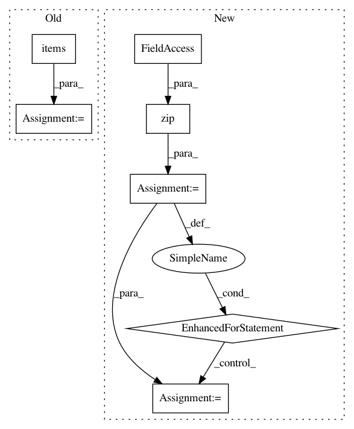

71bd73748b835de5ae20bdc90ce4321e47f4c2b2,python/eight_mile/tf/layers.py,EmbeddingsStack,call,#EmbeddingsStack#Any#,390
Before Change
:return: A 3-d vector where the last dimension is the concatenated dimensions of all embeddings
all_embeddings_out = []
for k, embedding in self.embeddings.items():
x = inputs[k]
embeddings_out = embedding(x)
all_embeddings_out.append(embeddings_out)
word_embeddings = tf.concat(values=all_embeddings_out, axis=-1)
return self.dropout(word_embeddings, TRAIN_FLAG())
@property
After Change
parallels = []
expanded = tf.expand_dims(inputs, ParallelConv.DUMMY_AXIS)
for W, b in zip(self.Ws, self.bs):
conv = tf.nn.conv2d(
expanded, W,
strides=[1, 1, 1, 1],
padding="SAME", name="CONV"
)
activation = self.activation(tf.nn.bias_add(conv, b), "activation")
parallels.append(activation)
combine = tf.reshape(tf.concat(values=parallels, axis=ParallelConv.FEATURE_AXIS), [-1, self.output_dim])
return combine
def compute_output_shape(self, input_shape):
In pattern: SUPERPATTERN
Frequency: 3
Non-data size: 7
Instances
Project Name: dpressel/mead-baseline
Commit Name: 71bd73748b835de5ae20bdc90ce4321e47f4c2b2
Time: 2019-09-25
Author: dpressel@gmail.com
File Name: python/eight_mile/tf/layers.py
Class Name: EmbeddingsStack
Method Name: call
Project Name: nilearn/nilearn
Commit Name: 9b8e57e26e0255f255d290ca948a9fa3f6e0319c
Time: 2015-12-15
Author: dkamalakarreddy@gmail.com
File Name: examples/manipulating_visualizing/plot_visualize_megatrawls_netmats.py
Class Name:
Method Name:
Project Name: home-assistant/home-assistant
Commit Name: d6abdc0d4efa8386e549a9c8bbacc52bf5c82f7e
Time: 2016-04-08
Author: jaharkes@cs.cmu.edu
File Name: homeassistant/util/yaml.py
Class Name:
Method Name: _ordered_dict